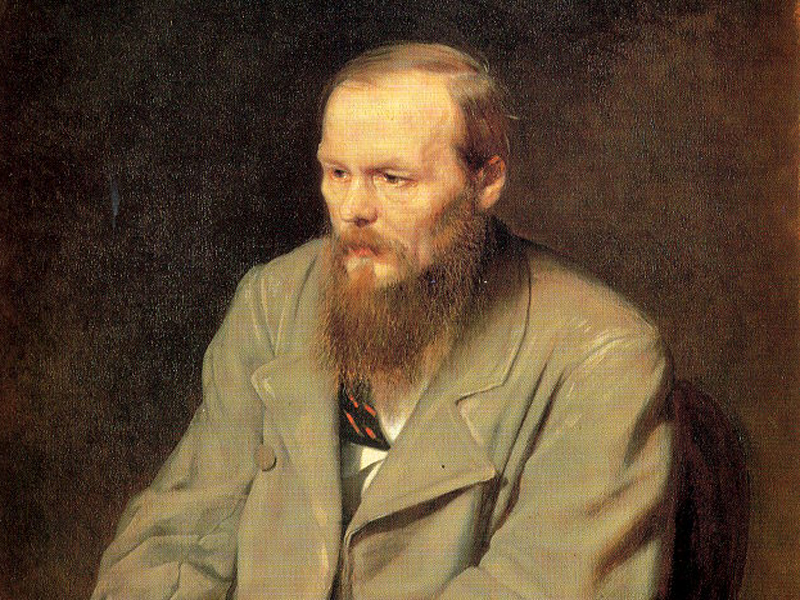

Fëdor Michajlovič Dostoevskij (in russo Фёдор Михайлович Достоевский?; [ˈfʲɵdər
mʲɪˈxajləvʲɪtɕ
dəstɐˈjɛfskʲɪj][1]), in passato in italiano indicato anche come Teodoro Dostojevski[2] (Mosca, 11
novembre
1821[3] – San Pietroburgo, 9 febbraio 1881[4]) è stato uno scrittore e filosofo russo.
È considerato, insieme a Tolstoj, uno dei più grandi romanzieri e pensatori russi di tutti i tempi.[5

Ritratto del 1872 ad opera di Vasilij Perov (Galleria Tret'jakov, Mosca)
Fëdor, secondo di otto figli, nasce a Mosca nel 1821 da Michail Andreevič
Dostoevskij, un medico
militare russo, figlio di un arciprete ortodosso discendente da una nobile famiglia, dal carattere
stravagante e dispotico che alleva il ragazzo in un clima autoritario. La madre, Marija Fëdorovna
Nečaeva, proveniva da una famiglia di ricchi e prosperi commercianti russi; dal carattere allegro e
semplice, amava la musica ed era molto religiosa. Sarà lei a insegnare a leggere al figlio
facendogli conoscere Aleksandr Sergeevič Puškin, Vasilij Andreevič Žukovskij e la Bibbia. A Fëdor,
secondogenito dopo Michail Michailovič nato nel 1820, succederanno altri sei figli: le quattro
sorelle Varvara, Ljubov', Vera e Aleksandra Dostoevskaja e i due fratelli Andrej e Nikolaj.
La famiglia viveva all' interno dell’ospedale dei poveri dove il padre prestava servizio. Il piccolo
Fëdor visse i suoi primi dieci anni di vita tra i poveri, i malati, l'andirivieni di un ospedale, le
pause in giardino. L'esperienza lo segnò per tutta la sua vita di scrittore, ponendogli la domanda
circa il paradosso della sofferenza del giusto. In quegli anni legge le Storie dell’Antico e del
Nuovo Testamento e il Libro di Giobbe [7]
Nel 1828 il padre Michail Andreevič è iscritto con i figli nell'albo d'oro della nobiltà moscovita.
Nel 1831 Fëdor si trasferisce con la famiglia a Darovoe nel governatorato di Tula dove il padre ha
comprato un vasto terreno. Nel 1834, insieme al fratello Michail, entra nel convitto privato di L.I.
Čermak, a Mosca. Nel febbraio del 1837 la madre, da tempo ammalata di tisi, muore e il giovane viene
trasferito col fratello a San Pietroburgo entrando nel convitto preparatorio del capitano K. F.
Kostomarov per sostenere gli esami d'ammissione all'istituto d'ingegneria. Il 16 gennaio 1838 entra
alla Scuola Superiore del genio militare di San Pietroburgo, dove studia ingegneria militare,
frequentandola però controvoglia essendo i suoi interessi già orientati verso la letteratura.
L'8 giugno 1839 il padre, che si era dato al bere e maltrattava i propri contadini, viene ucciso
probabilmente dagli stessi. Alla notizia della morte del padre, Fëdor, all'età di 17 anni, ebbe il
suo primo attacco di epilessia. Le crisi epilettiche lo perseguiteranno per tutta la vita.
Nell'agosto 1841 viene ammesso al corso per ufficiali e l'anno seguente viene promosso sottotenente.
L'estate successiva entra in servizio effettivo presso il comando del Genio di San Pietroburgo. Sono
anni d'indigenza. Per sbarcare il lunario, di notte traduce l'Eugénie Grandet di Honoré de Balzac ed
il Don Carlos di Friedrich Schiller. Ma per opposte tendenze, elemosina e dissolutezza, il denaro
non gli basta mai.
Il 12 agosto 1843 Fëdor si diploma, ma nell'agosto 1844 dà le dimissioni, lascia il servizio
militare e rinuncia alla carriera che il titolo gli offre. Lottando contro la povertà e la salute
cagionevole, comincia a scrivere il suo primo libro, Povera gente (Bednye Ljudi), che vede la luce
nel 1846 e ha gli elogi di critici come Belinskij e Nekrasov. In questo primo lavoro, lo scrittore
rivela uno dei temi maggiori della produzione successiva: la sofferenza per l'uomo socialmente
degradato e incompreso.
Nell'estate Dostoevskij inizia a scrivere il suo secondo romanzo, Il sosia (Dvojnik), storia di uno
sdoppiamento psichico che non ha però il consenso del primo romanzo, e a novembre, in una sola
notte, scrive Romanzo in nove lettere (Roman v devjati pisem). Vedono successivamente la luce alcuni
racconti su varie riviste, tra i quali i romanzi brevi Le notti bianche (Belye noči) e Netočka
Nezvanova.